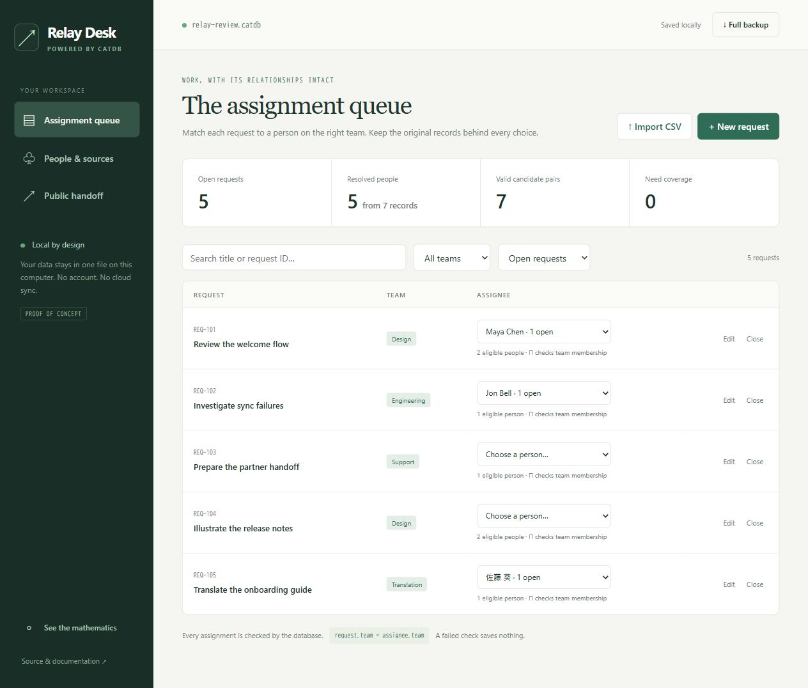

Bring your own CSVs.
Map columns, name each source, and update it later. Keep original names and memberships even when records resolve to one person.
A SMALL DATABASE. A STRUCTURAL IDEA.
An embedded Haskell database where views, identity merges and compatible joins come from maps between schemas.
One local file · No database service · MIT source · Working PoC
Identity by declared relationships.
Eligibility by agreement on team.
THE REFERENCE APPLICATION
Meet Relay Desk. Import the CSVs you already have, reconcile duplicate people, assign work to the right team, and send a handoff without sending the whole database.
http://127.0.0.1:4283
Map columns, name each source, and update it later. Keep original names and memberships even when records resolve to one person.
See team-compatible people and their open workload. Create, edit, close and reopen requests. Contradictory changes are rejected atomically.
Export open work as CSV or structured JSON. Leave emails, source records, closed work and unused values behind.
In the demo, link Jon B. to Jon Bell. Six source records become four people, and the Engineering request has one eligible person. Remove the link: both identities return, with their source records intact.
Follow the walkthrough ↗ONE MODEL, THREE CONSTRUCTIONS
A schema is a category C. An instance is a functor I : C → FinSet. A checked schema map F : C → D induces three migrations, related by two adjunctions.
LEFT KAN EXTENSION
Σ builds a quotient of transported elements. In Relay Desk, equal emails and explicit links generate identity classes. Original records remain traceable.
(Σ_F I)(d) = colim_(F ↓ d) IsigmaOrigins · sigmaUnit · sigmaFactor
assignment.ticket.team
= assignment.assignee.teamThe same equation is checked for UI changes, imports and library callers. An invalid final state never becomes a committed instance.
Units, counits and unique factor maps are API operations. Tests enumerate small natural-transformation sets and check both adjunction correspondences in both directions.
Read the construction and formulas ↗The app assembles person/team memberships before Π and trims unreachable values after Δ. These policies are explicit. Category theory preserves declared structure; it does not infer who someone is or decide who should do the work.
FOR APPLICATION DEVELOPERS
Use the library in Haskell, the CLI in a script, or Relay Desk in a browser. Transactions share the same pure validation core.
.\relay-desk.exe desk.catdb --demo
# Your workspace, in one file.
# Open http://127.0.0.1:4283-- Application-defined schema maps
resolved <- sigma identityMap roster
candidates <- piMigration eligibilityMap members
public <- delta publicMap workspace
handoff <- generated visibleRoots public
-- Commit a checked batch
transaction db $ \current -> do
next <- edit changes current
pure ((), next)AN EXPERIMENT YOU CAN ACTUALLY USE
CatDB explores a local, embedded role inspired by SQLite's simplicity. It is a working PoC, not a drop-in SQLite replacement. SQL can implement these workflows too; the experiment is the coherence and inspectability of the transformations.
Small local tools, CSV reconciliation, schema-driven views, and finite categorical data migration.
Acyclic schemas. In-memory data. One exclusive connection. Bounded queries. No SQL, remote service, encryption or stable-format promise.
BUILD SOMETHING. BRING A COUNTEREXAMPLE.
MIT source. A real reference app. An open question worth testing.